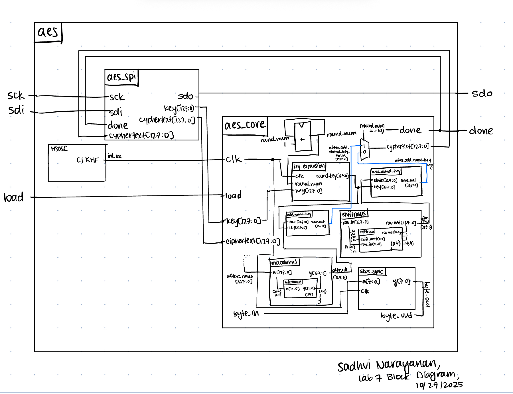

Lab 7 Report
Introduction
In this lab, we built the AES encryption system on the FPGA and had to be thoughtful about building the architecture so that it fits on the FPGA. We also interfaced the FPGA with the MCU, where the MCU sends the key and plaintext to the FPGA, and the FPGA using the AES algorithm hardware built will sent the cypertext back to the MCU which will then turn on an LED if that is intended. This gives us experience with hardware accelerators as the AES algorithm runs faster in hardware than it does with software.
Design and Testing Methodology
In terms of the design for this project I first had to think carefully about how I wanted to implement it in hardware so it would fit on the FPGA because we have a limited number of LUTs. I then had to come up with tradeoffs in terms of memory versus time. For example, my design takes 16 extra clock cycles, however it uses fewer number of LUTs - around 1500/5200 available ones. Furthermore, I had to really think about the timing of my signals, and on what round and what cycle certain pieces of information had to be ready. This meant I had to be intentional about what signals I was putting in my flop, and how many modules I was instantiating. It was a really fun and interesting lab, and I really enjoyed designing the FSM. In terms of testing the design, we had some testbenches provided to us, and I also wrote a testbench for each module, and simulated it with different keys and plaintexts to make sure I was get the correct output. I also traced through my output at each stage to further verify this. We also looked at the logic analyzer to make sure the correct data was propagating.
Technical Documentation:
The source code for the project can be found in the associated Github repository
Block Diagram
 The image above shows the block diagram of how each of my modules connect to each other, and how the signals propagate.
Results and Discussion
I was able to accomplish all of the prescribed tasks in this project. I also met all the intended design objectives, and was able to check off all the components in the spec, along with the excellence components.
The design performs as expected, as it correctly sends the data through SPI, and the FPGA correct sends back the ciphertext. I can tell this because in the MCU code, an LED will light up once the transaction is completed and the ciphertext the FPGA sends matches the expected ciphertext. The design is reliable, accurate, and it is also quite efficient on the hardware.
Below are the test benches for the AES core and AES core with SPI.
Now, we have the result of the Logic Analyzer, displaying the SPI transactions. The first data that is transmitted on SPI through MOSI, is the plaintext and key, and the FPGA should output the ciphtertext (ct) which is the following:
char key[16] = {0x00, 0x01, 0x02, 0x03, 0x04, 0x05, 0x06, 0x07, 0x08, 0x09, 0x0A, 0x0B, 0x0C, 0x0D, 0x0E, 0x0F};
char plaintext[16] = {0x00, 0x11, 0x22, 0x33, 0x44, 0x55, 0x66, 0x77, 0x88, 0x99, 0xAA, 0xBB, 0xCC, 0xDD, 0xEE, 0xFF};
char ct[16] = {0x69, 0xC4, 0xE0, 0xD8, 0x6A, 0x7B, 0x04, 0x30, 0xD8, 0xCD, 0xB7, 0x80, 0x70, 0xB4, 0xC5, 0x5A};


Below are the images from the return transaction, on MISO/CIPO where the FPGA is responding with the ciphertext:
Conclusion
The design works as expected, and works as an AES encoder, where it takes a key and plaintext from the MCU, and then sends it to the FPGA, where the FPGA performs 10 rounds of AES encryption, and then sends the result back to the MCU, along with a done signal, letting the MCU know the transaction is complete. This was a really fun lab, and I thought it was really cool :). I spent 15 hours working on this lab.
AI Prototype Summary
Figure __ shows the result of the AI engine writing verilog to create the KeyExpansion module. Overall, the code works pretty well, and it even breaks it up by round instead of doing it all at once and then using that result. Additionally, it defines more helper modules to take care of tasks like shifting, which is good since these features are used often in other modules too. Overall, it looks pretty correct and it compiled. Additionally, it new all the round constants, and I was really surprised about this.
Figure __ above shows the result of the second prompt. The output of this prompt was very different than the style used earlier, as it did not rely on the AES knowlegde, and instead implemented the math for the new algorithm. It is definitely a lot more inefficient because of the multuple for loops, and within each loop, a module is instantiated - which means it will blow up the hardware to a decent extent. The LLM having knowledge of AES, definitely simplifies the entire process.